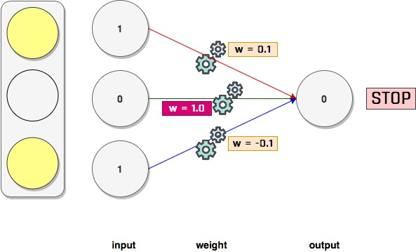

3. Derin Sinir Ağları, Back Propagation
Kayıt Tarihi:
Son Güncelleme:
Bu derste derin öğrenme konusuna giriyoruz, önceki derste gördüğümüz öğrenme adımını geliştirerek bir derin sinir ağı tasarlayacağız. Bu sinir ağının öğrenmesine de derin öğrenme diyeceğiz.
Anahtar Kelimeler: activation · back propagation · batch size · derin öğrenme · derin sinir ağı · generalization · gizli katman · gradient descent · hidden layer · katman · layer · memorization · mini batch gradient descent · nonlinearity · overfitting · regularization · relu · stochastic gradient descentBu konuyu bir örnek üzerinde açıklayacağım. Farz edelim ki yayalar caddede karşıdan karşıya geçerken bir çeşit trafik lambasına göre hareket ediyor. Trafik lambası aşağıdaki gibi üzerinde üç lambadan oluşan bir düzenek olsun, bu lambalar aynı anda yanabiliyor. Hangileri yandığında durmalısınız, hangi kombinasyonlarda geçmelisiniz bunun kuralını siz biliyor olabilirsiniz. Fakat bilgisayara bu kuralı açıkça anlatmak yerine makine öğrenmesi yöntemleriyle durmaya veya geçmeye karar vermesini öğreteceksiniz.
Bunun için biraz gözlem yaptınız. Bir süre boyunca lambaların çeşitli kombinasyonlarını ve bunlara karşın insanların ne yaptığını not aldınız. Mesela altı farklı kombinasyon için insanların durduğunu veya geçtiğini not aldınız ve aşağıdaki gibi bir tablo oluşturdunuz diyelim.

Burada lambaların ve insanların durumlarını kodladık ayrıca; lambanın yanmasını 1, yanmamasını 0, insanların geçmesini 1 ve durmasını 0 ile kodladık. Mesela trafik lambası 0 1 1 (input) iken insanlar 1 (output) olmuş (yürümüş).
Şimdi dataset (gözlem tablomuz) içindeki ilk veriyi kullanarak daha önce öğrendiğimiz yöntemle bir sinir ağı oluşturup çalıştıralım.
import numpy as np
weights = np.array([0.5, 0.48, -0.7]) #random
alpha = 0.01
streetlights = np.array( [ [ 1, 0, 1 ],
[ 0, 1, 1 ],
[ 0, 0, 1 ],
[ 1, 1, 1 ],
[ 0, 1, 1 ],
[ 1, 0, 1 ] ] )
walk_stop = np.array( [0, 1, 0, 1, 1, 0] )
input = streetlights[0] # [1,0,1]
truth = walk_stop[0] # 0, yani "stop"
for iteration in range(20):
prediction = input.dot(weights)
error = (truth - prediction)**2
delta = prediction - truth
weights = weights - (alpha*(input*delta)) #gradient descent
print("Error:" + str(error) + " Prediction:" + str(prediction))
>>>
Error:0.03999999999999998 Prediction:-0.19999999999999996
Error:0.03841599999999998 Prediction:-0.19599999999999995
Error:0.03689472640000001 Prediction:-0.19208000000000003
Error:0.03543369523456005 Prediction:-0.18823840000000014
Error:0.03403052090327151 Prediction:-0.18447363200000022
Error:0.03268291227550193 Prediction:-0.18078415936000014
Error:0.031388668949392025 Prediction:-0.17716847617280007
Error:0.030145677658996135 Prediction:-0.17362510664934416
Error:0.028951908823699888 Prediction:-0.17015260451635728
Error:0.02780541323428135 Prediction:-0.16674955242603007
Error:0.02670431887020383 Prediction:-0.16341456137750954
Error:0.02564682784294378 Prediction:-0.1601462701499594
Error:0.024631213460363184 Prediction:-0.15694334474696015
Error:0.023655817407332785 Prediction:-0.1538044778520209
Error:0.022719047038002375 Prediction:-0.15072838829498036
Error:0.02181937277529745 Prediction:-0.14771382052908066
Error:0.02095532561339566 Prediction:-0.144759544118499
Error:0.020125494719105186 Prediction:-0.141864353236129
Error:0.019328525128228604 Prediction:-0.13902706617140637
Error:0.01856311553315076 Prediction:-0.13624652484797828
Şimdi bir de benzer bir sinir ağıyla dataset içinden tek bir veri yerine tüm dataset üzerinden öğrenme yapalım. Bunu yapmak basittir, sırasıyla tüm input değerleri için ayrı ayrı sinir ağı tahminde bulunur ve hataya göre her adımda weight değerlerini günceller. Bu şekilde her adımda ayrı bir input ile öğrenerek tüm dataseti öğrenme yöntemine stochastic gradient descent yöntemi denir. Daha önce gradient descent yöntemi ile veri setinin tek bir seferde öğrenildiğini biliyoruz, bu yöntemle weight değerleri tek seferde güncellenir; fakat stochastic gradient descent ile her adımda weight değerleri güncellenir. Daha sonra değineceğiz ama bu ikisinin (tek seferde tüm veri setini öğrenme ile inputları teker teker öğrenme, yani gradient descent ve stochastic gradient descent) arasında başka bir yol daha vardır. Bu yöntemde kaç adımda bir weight değerlerinin güncelleneceği bir batch size değeri belirleriz.
import numpy as np
weights = np.array([0.5,0.48,-0.7])
alpha = 0.1
streetlights = np.array( [[ 1, 0, 1 ],
[ 0, 1, 1 ],
[ 0, 0, 1 ],
[ 1, 1, 1 ],
[ 0, 1, 1 ],
[ 1, 0, 1 ] ] )
walk_stop = np.array( [0, 1, 0, 1, 1, 0] )
input = streetlights[0] # [1,0,1]
goal_prediction = walk_stop[0] # 0
for iteration in range(40):
error_total = 0
for i in range(len(walk_stop)):
input = streetlights[i]
truth = walk_stop[i]
prediction = input.dot(weights)
error = (truth - prediction)**2
error_total += error
delta = prediction - truth
weights = weights - (alpha*(input*delta)) #stochastic gradient descent
print("Weights: " + str(weights) + ",\t Prediction:" + str(prediction))
print("Error:" + str(error_total) + "\n")
>>>
Weights: [ 0.52 0.48 -0.68], Prediction:-0.19999999999999996
Weights: [ 0.52 0.6 -0.56], Prediction:-0.19999999999999996
Weights: [ 0.52 0.6 -0.504], Prediction:-0.5599999999999999
Weights: [ 0.5584 0.6384 -0.4656], Prediction:0.6160000000000001
Weights: [ 0.5584 0.72112 -0.38288], Prediction:0.17279999999999995
Weights: [ 0.540848 0.72112 -0.400432], Prediction:0.17552
Error:2.6561231104
Weights: [ 0.5268064 0.72112 -0.4144736], Prediction:0.14041599999999999
Weights: [ 0.5268064 0.79045536 -0.34513824], Prediction:0.3066464
Weights: [ 0.5268064 0.79045536 -0.31062442], Prediction:-0.34513824
Weights: [ 0.52614267 0.78979163 -0.31128815], Prediction:1.006637344
Weights: [ 0.52614267 0.84194128 -0.2591385 ], Prediction:0.4785034751999999
Weights: [ 0.49944225 0.84194128 -0.28583891], Prediction:0.26700416768
Error:0.9628701776715985
Weights: [ 0.47808192 0.84194128 -0.30719925], Prediction:0.213603334144
Weights: [ 0.47808192 0.88846708 -0.26067345], Prediction:0.5347420299776
Weights: [ 0.47808192 0.88846708 -0.23460611], Prediction:-0.26067345110016
Weights: [ 0.46488763 0.87527279 -0.24780039], Prediction:1.1319428845096962
Weights: [ 0.46488763 0.91252555 -0.21054763], Prediction:0.6274723921901568
Weights: [ 0.43945363 0.91252555 -0.23598163], Prediction:0.25433999330650114
Error:0.5509165866836797
Weights: [ 0.41910643 0.91252555 -0.25632883], Prediction:0.20347199464520088
Weights: [ 0.41910643 0.94690588 -0.2219485 ], Prediction:0.6561967149569552
Weights: [ 0.41910643 0.94690588 -0.19975365], Prediction:-0.221948503950995
Weights: [ 0.40248056 0.93028001 -0.21637952], Prediction:1.166258650532124
Weights: [ 0.40248056 0.95888996 -0.18776957], Prediction:0.7139004922542389
Weights: [ 0.38100946 0.95888996 -0.20924067], Prediction:0.21471099528371604
Error:0.36445836852222424
Weights: [ 0.36383258 0.95888996 -0.22641755], Prediction:0.17176879622697283
Weights: [ 0.36383258 0.98564272 -0.19966479], Prediction:0.7324724146523222
Weights: [ 0.36383258 0.98564272 -0.17969831], Prediction:-0.19966478845083285
Weights: [ 0.34685488 0.96866502 -0.19667601], Prediction:1.1697769945341199
Weights: [ 0.34685488 0.99146612 -0.17387491], Prediction:0.7719890116601171
Weights: [ 0.32955689 0.99146612 -0.19117291], Prediction:0.17297997428859369
Error:0.2516768662079895
Weights: [ 0.31571849 0.99146612 -0.20501131], Prediction:0.13838397943087496
Weights: [ 0.31571849 1.01282064 -0.18365679], Prediction:0.7864548139561468
Weights: [ 0.31571849 1.01282064 -0.16529111], Prediction:-0.1836567869927348
Weights: [ 0.29939369 0.99649584 -0.18161591], Prediction:1.163248019006011
Weights: [ 0.29939369 1.01500784 -0.1631039 ], Prediction:0.8148799260629888
Weights: [ 0.28576471 1.01500784 -0.17673288], Prediction:0.1362897844408577
Error:0.17797575048089034
Weights: [ 0.27486153 1.01500784 -0.18763606], Prediction:0.10903182755268614
Weights: [ 0.27486153 1.03227067 -0.17037324], Prediction:0.8273717796510367
Weights: [ 0.27486153 1.03227067 -0.15333592], Prediction:-0.17037324196481937
Weights: [ 0.2594819 1.01689104 -0.16871555], Prediction:1.1537962739591756
Weights: [ 0.2594819 1.03207349 -0.15353309], Prediction:0.8481754931254761
Weights: [ 0.24888702 1.03207349 -0.16412797], Prediction:0.1059488041691444
Error:0.12864460733422164
Weights: [ 0.24041111 1.03207349 -0.17260388], Prediction:0.0847590433353155
Weights: [ 0.24041111 1.04612653 -0.15855084], Prediction:0.859469609749935
Weights: [ 0.24041111 1.04612653 -0.14269576], Prediction:-0.1585508402022421
Weights: [ 0.22602693 1.03174234 -0.15707994], Prediction:1.1438418857156731
Weights: [ 0.22602693 1.0442761 -0.14454618], Prediction:0.8746623946770374
Weights: [ 0.21787885 1.0442761 -0.15269426], Prediction:0.08148074110264475
Error:0.09511036950476208
Weights: [ 0.21136039 1.0442761 -0.15921272], Prediction:0.06518459288211581
Weights: [ 0.21136039 1.05576976 -0.14771906], Prediction:0.8850633823431538
Weights: [ 0.21136039 1.05576976 -0.13294715], Prediction:-0.14771905585408038
Weights: [ 0.19794209 1.04235146 -0.14636545], Prediction:1.1341830033853888
Weights: [ 0.19794209 1.05275286 -0.13596405], Prediction:0.8959860107828534
Weights: [ 0.19174429 1.05275286 -0.14216186], Prediction:0.0619780399014222
Error:0.07194564247043436
Weights: [ 0.18678604 1.05275286 -0.1471201 ], Prediction:0.04958243192113776
Weights: [ 0.18678604 1.06218958 -0.13768338], Prediction:0.9056327614440267
Weights: [ 0.18678604 1.06218958 -0.12391504], Prediction:-0.13768337501215525
Weights: [ 0.17427999 1.04968353 -0.1364211 ], Prediction:1.1250605910610996
Weights: [ 0.17427999 1.05835728 -0.12774734], Prediction:0.9132624284442169
Weights: [ 0.16962672 1.05835728 -0.1324006 ], Prediction:0.04653264583708144
Error:0.05564914990717743
Weights: [ 0.16590411 1.05835728 -0.13612322], Prediction:0.03722611666966513
Weights: [ 0.16590411 1.06613388 -0.12834662], Prediction:0.922234066504699
Weights: [ 0.16590411 1.06613388 -0.11551196], Prediction:-0.12834662236261596
Weights: [ 0.15425151 1.05448127 -0.12716456], Prediction:1.116526024487899
Weights: [ 0.15425151 1.0617496 -0.11989623], Prediction:0.9273167105424409
Weights: [ 0.15081598 1.0617496 -0.12333176], Prediction:0.03435527296969987
Error:0.04394763937673939
Weights: [ 0.14806756 1.0617496 -0.12608018], Prediction:0.027484218375759886
Weights: [ 0.14806756 1.06818266 -0.11964712], Prediction:0.9356694192994068
Weights: [ 0.14806756 1.06818266 -0.10768241], Prediction:-0.11964712469387503
Weights: [ 0.13721078 1.05732588 -0.11853919], Prediction:1.1085678053734553
Weights: [ 0.13721078 1.06344721 -0.11241786], Prediction:0.9387866868342218
Weights: [ 0.13473149 1.06344721 -0.11489715], Prediction:0.024792915481941458
Error:0.035357967050948465
Weights: [ 0.13274805 1.06344721 -0.11688059], Prediction:0.019834332385553155
Weights: [ 0.13274805 1.06879055 -0.11153725], Prediction:0.946566624680628
Weights: [ 0.13274805 1.06879055 -0.10038352], Prediction:-0.11153724870006754
Weights: [ 0.12263254 1.05867504 -0.11049903], Prediction:1.1011550767549563
Weights: [ 0.12263254 1.06385744 -0.10531663], Prediction:0.948176009263518
Weights: [ 0.12090095 1.06385744 -0.10704822], Prediction:0.017315912033043404
Error:0.02890700056547436
Weights: [ 0.11951568 1.06385744 -0.1084335 ], Prediction:0.013852729626434732
Weights: [ 0.11951568 1.06831505 -0.10397589], Prediction:0.9554239432448665
Weights: [ 0.11951568 1.06831505 -0.0935783 ], Prediction:-0.10397589092234266
Weights: [ 0.11009044 1.0588898 -0.10300354], Prediction:1.0942524239871314
Weights: [ 0.11009044 1.06330118 -0.09859217], Prediction:0.9558862588907013
Weights: [ 0.10894061 1.06330118 -0.099742 ], Prediction:0.011498267782398985
Error:0.023951660591138853
Weights: [ 0.10802075 1.06330118 -0.10066186], Prediction:0.009198614225919194
Weights: [ 0.10802075 1.06703725 -0.09692579], Prediction:0.9626393189117293
Weights: [ 0.10802075 1.06703725 -0.08723321], Prediction:-0.09692579020989642
Weights: [ 0.09923827 1.05825477 -0.09601569], Prediction:1.087824783849832
Weights: [ 0.09923827 1.06203086 -0.0922396 ], Prediction:0.9622390773804066
Weights: [ 0.0985384 1.06203086 -0.09293946], Prediction:0.006998674002545002
Error:0.020063105176016144
Weights: [ 0.09797851 1.06203086 -0.09349936], Prediction:0.005598939202035996
Weights: [ 0.09797851 1.06517771 -0.09035251], Prediction:0.9685315005838672
Weights: [ 0.09797851 1.06517771 -0.08131726], Prediction:-0.09035250869077546
Weights: [ 0.08979461 1.05699381 -0.08950115], Prediction:1.0818389613301889
Weights: [ 0.08979461 1.06024455 -0.08625042], Prediction:0.9674926590701334
Weights: [ 0.08944019 1.06024455 -0.08660484], Prediction:0.003544193999268516
Error:0.016952094519447087
Weights: [ 0.08915666 1.06024455 -0.08688837], Prediction:0.0028353551994148157
Weights: [ 0.08915666 1.06290893 -0.08422399], Prediction:0.9733561723362383
Weights: [ 0.08915666 1.06290893 -0.07580159], Prediction:-0.0842239920152223
Weights: [ 0.08153026 1.05528253 -0.08342799], Prediction:1.0762639960116431
Weights: [ 0.08153026 1.05809708 -0.08061345], Prediction:0.9718545378681842
Weights: [ 0.08143858 1.05809708 -0.08070513], Prediction:0.0009168131382832068
Error:0.014420818295271236
Weights: [ 0.08136523 1.05809708 -0.08077847], Prediction:0.0007334505106265654
Weights: [ 0.08136523 1.06036522 -0.07851033], Prediction:0.9773186039296565
Weights: [ 0.08136523 1.06036522 -0.0706593 ], Prediction:-0.07851033295953944
Weights: [ 0.07425812 1.0532581 -0.07776641], Prediction:1.0710711494147542
Weights: [ 0.07425812 1.05570893 -0.07531558], Prediction:0.9754916865567282
Weights: [ 0.07436386 1.05570893 -0.07520984], Prediction:-0.0010574652271341245
Error:0.012331739998443648
Weights: [ 0.07444846 1.05570893 -0.07512524], Prediction:-0.0008459721817072885
Weights: [ 0.07444846 1.05765056 -0.07318361], Prediction:0.9805836929862668
Weights: [ 0.07444846 1.05765056 -0.06586525], Prediction:-0.07318360881847627
Weights: [ 0.06782508 1.05102719 -0.07248863], Prediction:1.066233777045345
Weights: [ 0.06782508 1.05317333 -0.07034248], Prediction:0.9785385598617921
Weights: [ 0.06807682 1.05317333 -0.07009074], Prediction:-0.0025173975573930946
Error:0.010587393171639842
Weights: [ 0.06827822 1.05317333 -0.06988935], Prediction:-0.002013918045914484
Weights: [ 0.06827822 1.05484493 -0.06821775], Prediction:0.9832839794497644
Weights: [ 0.06827822 1.05484493 -0.06139597], Prediction:-0.06821774801198803
Weights: [ 0.0621055 1.04867221 -0.06756869], Prediction:1.0617271739912904
Weights: [ 0.0621055 1.05056186 -0.06567904], Prediction:0.9811035235627523
Weights: [ 0.06246285 1.05056186 -0.06532169], Prediction:-0.0035735447350425317
Error:0.009117233405426495
Weights: [ 0.06274874 1.05056186 -0.0650358 ], Prediction:-0.002858835788034024
Weights: [ 0.06274874 1.05200926 -0.06358841], Prediction:0.9855260569025094
Weights: [ 0.06274874 1.05200926 -0.05722957], Prediction:-0.06358841060413677
Weights: [ 0.05699589 1.04625641 -0.06298241], Prediction:1.05752842286588
Weights: [ 0.05699589 1.04792901 -0.06130981], Prediction:0.9832740020092452
Weights: [ 0.05742729 1.04792901 -0.06087842], Prediction:-0.004313918034364962
Error:0.00786904226904208
Weights: [ 0.0577724 1.04792901 -0.06053331], Prediction:-0.003451134427491974
Weights: [ 0.0577724 1.04918944 -0.05927288], Prediction:0.9873957068535818
Weights: [ 0.0577724 1.04918944 -0.05334559], Prediction:-0.059272877470408075
Weights: [ 0.05241077 1.04382782 -0.05870721], Prediction:1.0536162524729626
Weights: [ 0.05241077 1.04531576 -0.05721928], Prediction:0.9851206027353137
Weights: [ 0.05289162 1.04531576 -0.05673843], Prediction:-0.004808501248434842
Error:0.006803273214640502
Weights: [ 0.0532763 1.04531576 -0.05635375], Prediction:-0.0038468009987478735
Weights: [ 0.0532763 1.04641956 -0.05524995], Prediction:0.9889620124129692
Weights: [ 0.0532763 1.04641956 -0.04972495], Prediction:-0.05524994626077355
Weights: [ 0.04827921 1.04142247 -0.05472204], Prediction:1.049970908776931
Weights: [ 0.04827921 1.04275242 -0.05339208], Prediction:0.9867004228010665
Weights: [ 0.0487905 1.04275242 -0.0528808 ], Prediction:-0.005112871449710697
Error:0.005889303541837786
Weights: [ 0.04919953 1.04275242 -0.05247177], Prediction:-0.004090297159768559
Weights: [ 0.04919953 1.04372436 -0.05149983], Prediction:0.9902806551018011
Weights: [ 0.04919953 1.04372436 -0.04634985], Prediction:-0.051499833441728114
Weights: [ 0.04454213 1.03906695 -0.05100725], Prediction:1.0465740376293469
Weights: [ 0.04454213 1.04026098 -0.04981322], Prediction:0.9880596998997442
Weights: [ 0.04506924 1.04026098 -0.04928611], Prediction:-0.0052710974096659285
Error:0.0051029252561172675
Weights: [ 0.04549092 1.04026098 -0.04886443], Prediction:-0.004216877927732746
Weights: [ 0.04549092 1.04112133 -0.04800408], Prediction:0.9913965574535352
Weights: [ 0.04549092 1.04112133 -0.04320367], Prediction:-0.048004082062078055
Weights: [ 0.04115007 1.03678047 -0.04754453], Prediction:1.043408578143574
Weights: [ 0.04115007 1.03785688 -0.04646813], Prediction:0.9892359385403211
Weights: [ 0.04168187 1.03785688 -0.04593632], Prediction:-0.005318059364078823
Error:0.004424644608684828
Weights: [ 0.04210732 1.03785688 -0.04551087], Prediction:-0.0042544474912630525
Weights: [ 0.04210732 1.03862228 -0.04474547], Prediction:0.992346001517791
Weights: [ 0.04210732 1.03862228 -0.04027093], Prediction:-0.044745474990504665
Weights: [ 0.03806145 1.03457641 -0.04431679], Prediction:1.0404586655589985
Weights: [ 0.03806145 1.03555045 -0.04334276], Prediction:0.9902596156014837
Weights: [ 0.03858958 1.03555045 -0.04281463], Prediction:-0.005281305317687134
Error:0.0038385124412518303
Weights: [ 0.03901209 1.03555045 -0.04239212], Prediction:-0.0042250442541497055
Weights: [ 0.03901209 1.03623462 -0.04170795], Prediction:0.9931583274383705
Weights: [ 0.03901209 1.03623462 -0.03753716], Prediction:-0.041707953394155776
Weights: [ 0.03524113 1.03246366 -0.04130811], Prediction:1.0377095425371112
Weights: [ 0.03524113 1.03334811 -0.04042367], Prediction:0.9911555487826897
Weights: [ 0.03575938 1.03334811 -0.03990541], Prediction:-0.005182536193432452
Error:0.0033313054558089675
Weights: [ 0.03617399 1.03334811 -0.03949081], Prediction:-0.004146028954745959
Weights: [ 0.03617399 1.03396238 -0.03887654], Prediction:0.9938572955409696
Weights: [ 0.03617399 1.03396238 -0.03498889], Prediction:-0.03887654022599941
Weights: [ 0.03265924 1.03044763 -0.03850363], Prediction:1.0351474779634813
Weights: [ 0.03265924 1.03125323 -0.03769803], Prediction:0.9919439948626794
Weights: [ 0.03316312 1.03125323 -0.03719415], Prediction:-0.00503879377425797
Error:0.0028919416227737734
Weights: [ 0.03356622 1.03125323 -0.03679105], Prediction:-0.004031035019406375
Weights: [ 0.03356622 1.03180701 -0.03623727], Prediction:0.9944621787695098
Weights: [ 0.03356622 1.03180701 -0.03261354], Prediction:-0.03623726848360008
Weights: [ 0.03029025 1.02853104 -0.03588951], Prediction:1.032759692455092
Weights: [ 0.03029025 1.02926689 -0.03515366], Prediction:0.9926415313729495
Weights: [ 0.03077659 1.02926689 -0.03466732], Prediction:-0.004863410672429416
Error:0.002511053608117256
Weights: [ 0.03116567 1.02926689 -0.03427825], Prediction:-0.003890728537943533
Weights: [ 0.03116567 1.02976803 -0.03377711], Prediction:0.9949886390193969
Weights: [ 0.03116567 1.02976803 -0.0303994 ], Prediction:-0.03377711399894662
Weights: [ 0.02811224 1.0267146 -0.03345283], Prediction:1.0305342898820642
Weights: [ 0.02811224 1.02738842 -0.03277901], Prediction:0.9932617646389992
Weights: [ 0.02857892 1.02738842 -0.03231233], Prediction:-0.004666769772712614
Error:0.0021806703520253884
Weights: [ 0.02895226 1.02738842 -0.03193899], Prediction:-0.003733415818170091
Weights: [ 0.02895226 1.02784348 -0.03148393], Prediction:0.9954494302702878
Weights: [ 0.02895226 1.02784348 -0.02833554], Prediction:-0.03148393251909879
Weights: [ 0.02610624 1.02499746 -0.03118156], Prediction:1.0284601943056741
Weights: [ 0.02610624 1.02561587 -0.03056315], Prediction:0.9938158986070053
Weights: [ 0.02655193 1.02561587 -0.03011746], Prediction:-0.004456911151490314
Error:0.0018939739123713475
Weights: [ 0.02690848 1.02561587 -0.0297609 ], Prediction:-0.003565528921192253
Weights: [ 0.02690848 1.02603037 -0.0293464 ], Prediction:0.9958549628928723
Weights: [ 0.02690848 1.02603037 -0.02641176], Prediction:-0.029346400840475826
Weights: [ 0.02425577 1.02337766 -0.02906447], Prediction:1.0265270918125804
Weights: [ 0.02425577 1.02394634 -0.02849579], Prediction:0.9943131920358295
Weights: [ 0.02467977 1.02394634 -0.02807179], Prediction:-0.004240016908292479
Error:0.0016451096996342332
Weights: [ 0.02501898 1.02394634 -0.02773259], Prediction:-0.0033920135266339822
Weights: [ 0.02501898 1.02432497 -0.02735396], Prediction:0.9962137566721563
Weights: [ 0.02501898 1.02432497 -0.02461857], Prediction:-0.02735396176499221
Weights: [ 0.02254644 1.02185243 -0.0270911 ], Prediction:1.0247253767906936
Weights: [ 0.02254644 1.0223763 -0.02656724], Prediction:0.9947613261560856
Weights: [ 0.02294852 1.0223763 -0.02616516], Prediction:-0.004020798285770878
Error:0.0014290353984827077
Weights: [ 0.02327018 1.0223763 -0.02584349], Prediction:-0.003216638628616701
Weights: [ 0.02327018 1.02272302 -0.02549677], Prediction:0.9965328046163073
Weights: [ 0.02327018 1.02272302 -0.0229471 ], Prediction:-0.025496772653362886
Weights: [ 0.02096557 1.02041841 -0.02525171], Prediction:1.0230461022472208
Weights: [ 0.02096557 1.02090174 -0.02476838], Prediction:0.9951667005089379
Weights: [ 0.02134585 1.02090174 -0.0243881 ], Prediction:-0.0038028045995257484
Error:0.0012413985592149145
Weights: [ 0.02165008 1.02090174 -0.02408387], Prediction:-0.003042243679620596
Weights: [ 0.02165008 1.02121995 -0.02376566], Prediction:0.996817865235065
Weights: [ 0.02165008 1.02121995 -0.02138909], Prediction:-0.023765657359234325
Weights: [ 0.01950198 1.01907186 -0.02353719], Prediction:1.0214809338160067
Weights: [ 0.01950198 1.01951839 -0.02309065], Prediction:0.995534671160774
Weights: [ 0.01986085 1.01951839 -0.02273179], Prediction:-0.0035886696105582767
Error:0.0010784359268087556
Weights: [ 0.02014794 1.01951839 -0.02244469], Prediction:-0.0028709356884466207
Weights: [ 0.02014794 1.01981102 -0.02215206], Prediction:0.9970736974585198
Weights: [ 0.02014794 1.01981102 -0.01993686], Prediction:-0.022152061336940452
Weights: [ 0.01814573 1.01780881 -0.02193907], Prediction:1.0200221071408409
Weights: [ 0.01814573 1.01822183 -0.02152604], Prediction:0.9958697426723416
Weights: [ 0.01848376 1.01822183 -0.02118801], Prediction:-0.0033803078583175654
Error:0.0009368896209360312
Weights: [ 0.01875419 1.01822183 -0.02091758], Prediction:-0.0027042462866540516
Weights: [ 0.01875419 1.01849141 -0.02064801], Prediction:0.9973042495523706
Weights: [ 0.01875419 1.01849141 -0.01858321], Prediction:-0.02064800972530455
Weights: [ 0.01688795 1.01662517 -0.02044945], Prediction:1.018662388355171
Weights: [ 0.01688795 1.0170076 -0.02006702], Prediction:0.9961757229433927
Weights: [ 0.01720586 1.0170076 -0.01974911], Prediction:-0.0031790709774033414
Error:0.0008139366504753339
Weights: [ 0.01746018 1.0170076 -0.01949479], Prediction:-0.002543256781922673
Weights: [ 0.01746018 1.01725632 -0.01924607], Prediction:0.9975128111306469
Weights: [ 0.01746018 1.01725632 -0.01732146], Prediction:-0.019246068219762574
Weights: [ 0.01572068 1.01551681 -0.01906097], Prediction:1.0173950374076535
Weights: [ 0.01572068 1.01587123 -0.01870655], Prediction:0.9964558482449631
Weights: [ 0.01601927 1.01587123 -0.01840796], Prediction:-0.0029858720226535913
Error:0.0007071291752624441
Weights: [ 0.01625813 1.01587123 -0.01816909], Prediction:-0.002388697618122871
Weights: [ 0.01625813 1.01610102 -0.01793931], Prediction:0.9977021355600483
Weights: [ 0.01625813 1.01610102 -0.01614538], Prediction:-0.01793930655497516
Weights: [ 0.01463676 1.01447964 -0.01776675], Prediction:1.0162137740080082
Weights: [ 0.01463676 1.01480835 -0.01743804], Prediction:0.9967128843019345
Weights: [ 0.01491689 1.01480835 -0.01715791], Prediction:-0.0028012842268006904
Error:0.0006143435674831474
Weights: [ 0.01514099 1.01480835 -0.01693381], Prediction:-0.0022410273814405524
Weights: [ 0.01514099 1.0150209 -0.01672126], Prediction:0.9978745386023716
Weights: [ 0.01514099 1.0150209 -0.01504914], Prediction:-0.016721264429884947
Weights: [ 0.01362971 1.01350962 -0.01656041], Prediction:1.0151127459893812
Weights: [ 0.01362971 1.0138147 -0.01625533], Prediction:0.9969492081270097
Weights: [ 0.01389228 1.0138147 -0.01599277], Prediction:-0.0026256193329783125
Error:0.00053373677328488
Yukarıdaki programın çıktısını incelerseniz weight değerlerinden ilk ve üçüncü lambanın değeri sıfıra, ortadaki lambanın weight değeri ise bire yakınsıyor. Gerçekten gözlem tablonuzu incelerseniz bunu anlamlandırabilirsiniz; zira ortadaki lamba yanıyorsa yürüyebilirsiniz, yanmıyorsa beklersiniz. Sonucu sadece ortadaki lamba belirliyor! 
Dolayısıyla sinir ağımız 1,0,1 input değeri ile 0 (stop) outpur değeri arasında bir ilişki kurabilecek şekilde weight değerleri aradı. Dikkat ederseniz ortadaki lambanın weight değeri sonuçta 1 olarak, diğer weight değerleri 0 olarak belirlenmiş. Bunun anlamı şudur; şinir ağımız ortadaki input ile sonuç arasında güçlü bir ilişki fark etmiş; bu ilişkiye istatistiksel olarak korelasyon diyoruz. Yüksek korelasyona sahip çiftler arasında yüksek weight değerleri oluşur, düşük korelasyonlu (yani ilişki belirtmeyen rastgele dağılımlı) çiftler arasında da düşük weight parametreleri oluşur. Burda sinir ağımız ortadaki lamba ile sonuç arasında önemli bir korelasyon olduğunu belirtiyor; her adımda bu korelasyonu fark ederek gittikçe bunun değerini bire, diğerlerininkini de sıfıra yaklaştırıyor. Böylece tahmin adımında input değerlerini karşılık gelen weight değerleri ile çarpıp topladığımızda output değerine yaklaşık sonuç elde edebiliriz.
Peki korelasyona bağlı bu değişimi sinir ağımız nasıl yapabildi? Cevap gradient descent adımı; bu işlem her bir weight değeri üzerinde aşağı ya da yukarı yönde bir baskı oluşturur. Bu baskı sonucunda ilgili weight değeri küçülür veya büyür. Gradient descent adımında toplam hata tespit edilir ve bu hataya hangi weight değerlerinin hangi oranlarda katkıda bulunduğu tespit edilir. Daha sonra hataya katkıda bulunan weight değerleri küçültülür, katkısı olmayanlar bırakılır. $$ \begin{array}{cccc|cccc} %\textrm{Data}&&&&&\textrm{Weight baskısı}&&\\ \texttt{1, 0, 1} & \longrightarrow & \texttt{0} & \qquad & \qquad & \texttt{-}\quad\texttt{0}\quad\texttt{-} & \longrightarrow & \texttt{0}\\ \texttt{0, 1, 1} & \longrightarrow & \texttt{1} & \qquad & \qquad & \texttt{0}\quad\texttt{+}\quad\texttt{+} & \longrightarrow & \texttt{1}\\ \texttt{0, 0, 1} & \longrightarrow & \texttt{0} & \qquad & \qquad & \texttt{0}\quad\texttt{0}\quad\texttt{-} & \longrightarrow & \texttt{0}\\ \texttt{1, 1, 1} & \longrightarrow & \texttt{1} & \qquad & \qquad & \texttt{+}\quad\texttt{+}\quad\texttt{+} & \longrightarrow & \texttt{1}\\ \texttt{0, 1, 1} & \longrightarrow & \texttt{1} & \qquad & \qquad & \texttt{0}\quad\texttt{+}\quad\texttt{+} & \longrightarrow & \texttt{1}\\ \texttt{1, 0, 1} & \longrightarrow & \texttt{0} & \qquad & \qquad & \texttt{-}\quad\texttt{0}\quad\texttt{-} & \longrightarrow & \texttt{0}\\ \end{array} $$
Yukarıdaki tabloda sol tarfta input ve output değerleri, sağ tarafta da ilgili weight baskısı canlandırılıyor. Mesela ilk training örneğine bakın; input (1,0,1) ve output (0) arasında korelasyonu tespit etmek için ilk ve üçüncü weight değerleri azaltılıyor, ortadaki weight değeri ise sabit bırakılıyor çünkü bu zaten sıfır (weight ne olursa olsun bununla çarpılınca etkisi olmayacak). Altı training örneğinin tamamını dikkate aldığımızda şunu fark ederiz; sağ ve sol tarafta hem pozitif hem de negatif baskılar var ve bunların tamamı bunları sıfıra doğru sürükler, ortadaki weight parametresi ise her adımda yükseltilmiş. Yani makine ortadaki lamba ile sonuç arasında sürekli korelasyon uyarısı vermiş. Sinir ağımız her adımda korelasyon bulduğu yerde weight değerini yükselterek 1'e yaklaştırmış, korelasyon görmediği (diskorelasyon) yerlerde weight değerlerini azaltmış. İşlemin sonunda da toplam olarak sinir ağı ortadaki input ile sonuç arasında güçlü bir korelasyon bulduğunu belirtmiş. Tahmin dediğimiz şeyin input ile weightlerin çarpımı olduğunu hatırlayın, bu yapılan işin mantıklı olduğunu kavrayacaksınız.
peki ya bir adımda tesadüfen hata sıfır çıkarsa? Mesela yukarıdaki tablonun ilk training örneğinde sağdaki weight değeri 0.5 ve soldaki weight değeri de -0.5 olsaydı ne olurdu? Bu durumda weight ile input çarpımı 0 olacak, yani weight değerlerini güncellemeye gerek kalmadan mükemmel tahmini (error=0) yakalamış oluruz. Weight değerleri güncellenmediği için burada öğrenme gerçekleşmemiş olur, eğer bu yakalanan hatasız tahmin tesadüfi ise makine hiç bir şey öğrenmedi ve başka inputlarda hatalı tahmin yapacak demektir. Bu olguya overfitting denir. Eğer sadece bu veriyi kullanarak öğrenme yaptıysak yanlış yaptık, peki diğer verileri kullanarak devam edersek ne olur? Bu durumda diğer input değerleri overfitting olmuyorsa weight değerlerini güncellemeye devam eder ve makine öğrenmeye devam eder. Öğrenmeyi mesela sadece ilk iki inputla yaparsanız makineyi bu iki durumu ezberlemeye (memorize) zorlamış olursunuz, bu durumda bu ikisi dışında daha genel inputlar için hatalı tahmin üreteceksiniz demektir. Amacımız inputları kullanarak çok daha genel tahmin yapabilecek genel bir kural saptamak olmalıdır (generalization).
Şimdi yukarıdaki training tablosunda bir şeye daha dikkat çekmek istiyorum. Ortadaki weight değerleri üzerinde hep pozitif baskı var ve doğal olarak bunlar artarak bire yaklaşıyor, soldaki weight değerleri üzerinde hem pozitif hem de negatif baskılar var fakat negatifler daha fazla olduğundan bu weight değeri azalarak sıfıra yaklaşıyor. Fakat sağdaki weight değeri üzerinde negatif ve pozitif baskılar eşit oranda, sinir ağında bu weight değeri sıfıra yakınsıyor. Bunun anlamı bu weight üzerindeki negatif baskıların şiddeti pozitiflere göre daha yüksek, peki bu nasıl oluşuyor? Gradient descent adımında sağ ve orta weight değerleri ideal değerlerine yaklaştıkça bunların toplam hataya katkısı azalacak ve sol weight değerinin hataya katkısı daha görünür olacaktır, dolayısıyla bundan sonra soldakinin negatif veight baskısı artacaktır. Aşağıdaki grafikte bunu gözlemleyebilirsiniz, soldaki weight değeri diğerlerine göre daha yavaş yakınsıyor.
import numpy as np
import matplotlib.pyplot as plt
weights = np.array([0.5,0.48,-0.7])
alpha = 0.1
streetlights = np.array( [[ 1, 0, 1 ],
[ 0, 1, 1 ],
[ 0, 0, 1 ],
[ 1, 1, 1 ],
[ 0, 1, 1 ],
[ 1, 0, 1 ] ] )
walk_stop = np.array( [0, 1, 0, 1, 1, 0] )
input = streetlights[0] # [1,0,1]
goal_prediction = walk_stop[0] # 0
wr = []
wm = []
wl = []
for iteration in range(40):
error_total = 0
for i in range(len(walk_stop)):
input = streetlights[i]
truth = walk_stop[i]
prediction = input.dot(weights)
error = (truth - prediction)**2
error_total += error
delta = prediction - truth
weights = weights - (alpha*(input*delta)) #stochastic gradient descent
wr.append(weights[0])
wm.append(weights[1])
wl.append(weights[2])
plt.plot(range(len(wr)), wr, range(len(wm)), wm, range(len(wl)), wl)
plt.legend(['left', 'mid', 'right'])
plt.show()
Yukarıdaki ilk training örneğinde ortadaki input böyle mükemmel bir korelasyona sahip olmasaydı sinir ağımız sağdaki weight değerini sıfıra yaklaştırmakta başarısız olabilirdi. Daha sonra regularization işlemini açıklayacağım, bu işlem aynı sayıda pozitif ve negatif baskıya sahip weight değerlerini doğrudan sıfıra yaklaşmaya zorlar. Bu işlem avantajlıdır çünkü bu sayede sadece güçlü korelasyona sahip weight değerlerini günceller, korelasyona sahip olmayanları sustururuz. Bu örnekte ortadaki input korelasyona sahip olmasaydı regularization yapmadan sağdaki weight değerini sıfırlamamız zor olabilirdi, regularization ile bu değer doğrudan sıfıra yaklaştırılır.
Şimdi aşağıdaki dataseti inceleyin, bu durumda sinir ağımız ne yapabilir? $$ \begin{array}{cccc|cccc} %\textrm{Data}&&&&&\textrm{Weight baskısı}&&\\ \texttt{1, 0, 1} & \longrightarrow & \texttt{1} & \qquad & \qquad & \texttt{+}\quad\texttt{0}\quad\texttt{+} & \longrightarrow & \texttt{1}\\ \texttt{0, 1, 1} & \longrightarrow & \texttt{1} & \qquad & \qquad & \texttt{0}\quad\texttt{+}\quad\texttt{+} & \longrightarrow & \texttt{1}\\ \texttt{0, 0, 1} & \longrightarrow & \texttt{0} & \qquad & \qquad & \texttt{0}\quad\texttt{0}\quad\texttt{-} & \longrightarrow & \texttt{0}\\ \texttt{1, 1, 1} & \longrightarrow & \texttt{0} & \qquad & \qquad & \texttt{-}\quad\texttt{-}\quad\texttt{-} & \longrightarrow & \texttt{0}\\ \end{array} $$
Gördüğünüz gibi hiç bir input ile output arasında en ufak korelasyon yok, ayrıca her weight değeri eşit sayıda pozitif ve negatif baskıya sahip. Bu dataset sinir ağımız için büyük bir baş belası! Böyle bir durumda ne yapılabilir?
Eğer input dataset ile output dataset arasında hiç korelasyon yoksa yada çok düşük korelasyon varsa biz input dataseti kullanarak ara bir dataset üretiriz (farklı boyutta olabilir), bu yeni yapay dataset ile output arasında bir miktar korelasyonun var olmasını sağlarız. Böylece output ile korelasyonu bulunmayan bir dataset yerine bundan üretilmiş fakat korelasyona sahip bir dataset kullanarak training gerçekleştiririz. Sonuçta sinir ağımız üç aşamalı olur, sinir ağlarında bunlara katman (layer) deriz (burada input dataset, ara dataset ve output dataset olmak üzere üç katman var). Buradaki layer_1 gibi ara katmanlara gizli katman (hidden layer) deriz.
Yukarıda sinir ağımızın yapısı gösteriliyor; bu şekilde ikiden fazla katmana sahip sinir ağlarına derin sinir ağları (deep neural networks) denir, bu ağlarla gerçekleşen makine öğrenmesine de derin öğrenme (deep learning) denir. Bu örnekte layer_0 ile layer_2 arasında korelasyon yok fakat layer_0 katmanını kullanarak ürettiğimiz layer_1 katmanı ile layer_2 arasında belirli bir korelasyon var, peki pratikte bu özelliğe sahip layer_1 katmanını nasıl oluşturacağız? Bu derin sinir ağında öğrenme nasıl gerçekleşir?
Bu sorulara cevap aramak için sinir ağına daha yakından bakalım. Burada layer_1 ile layer_2 katmanlarından oluşan kısım daha önce defalarca train ettiğimiz bir yapıdadır; layer_1 inputlarını alırız ve weights_1_2 ile işleyerek tahmin üretiriz, daha sonra hatayı tespit ederek ilgili delta parametresine göre bir döngü içinde weights_1_2 parametrelerini güncelleyerek training yaparız.
Burada yeni olan kısım layer_0 ile layer_1 katmanlarından oluşan parçadır, weights_0_1 parametrelerini nasıl güncellemeliyiz ki layer_0 inputlarını bu weight ile işleyince oluşan layer_1 katmanı ve layer_2 katmanı arasında biraz korelasyon olsun? Bu weights_0_1 parametrelerini güncelleyebilmek için karşılık gelen delta (layer_1 için) parametrelerini bilmemiz gerekir, böylece gradient descent ile weight parametrelerini güncelleriz. Şimdi layer_1 için delta parametrelerini nasıl tespit edebileceğimize bakalım, tüm weightlerin rastgele başlatıldığını varsayalım. Biliyoruz ki layer_2 tahminindeki hataya layer_1 katmanındaki yüksek weight değerine sahip inputlar daha çok katkı sağlar, dolayısıyla layer_2 tahminini (dolayısıyla hatayı) azaltmak bir miktar istersek layer_1 inputlarını ilgili weight değerleri oranında değiştirmemiz gerekir. Çünkü bu tahmin layer_1 inputlarının weight_1_2 ile işlenmesiyle elde ediliyor. Dolayısıyla layer_1 katmanının delta değerlerini layer_2 katmanının delta değerlerinin karşılık gelen weights_1_2 değerleriyle çarparak tespit ederiz. Bunları kullanarak da weights_0_1 parametrelerini güncelleyebiliriz. Yani sonuca bakarak daha gerideki katmanın nasıl değiştirileceğini belirliyoruz, tersten düşünerek geliştirdiğimiz bu yönteme back propagation denir.
Şimdi daha geniş bir pencereden sinir ağımıza bir daha bakalım. Bir input değeri (layer_0) ilgili bir weight değeriyle (weights_0_1) çarpılıp bir değer elde ediliyor (layer_1), daha sonra bu değer de ilgili bir weight ile (weights_1_2) çarpılarak output değeri (layer_2) sonucuna ulaşılıyor. Daha sonra bu işlem diğer input we weightler için tekrarlanıyor. Sonuç olarak input değerinden output değerine ulaşmak için iki defa farklı weight değerleri ile çarpma işlemi yapılıyor, tek katmanlı bir ağdan tek farkımız bu! Oysa iki çarpmanın yapacağı işi tek bir çarpma ile de yapabiliriz, mesela $$1.0\cdot 0.25\cdot 0.9 = 1.0\cdot 0.225 = 0.225,$$ dolayısıyla tek katmanlı bir sinir ağı oluşturup tek bir uygun weight çarpmasıyla başarabileceğimiz işi iki katmanlı bir sinir ağıyla yapmaya çalışıyoruz. Yani iki katman kullanmamızın pek bir fayda sağladığı yok aslında!
Bir de şu açıdan düşünelim; layer_0 ile layer_2 arasında korelasyon yok, biz layer_0 katmanını weights_0_1 matrisi ile çarparak layer_1 katmanı oluşturuyoruz. Dolayısıyla layer_1 katmanı aslında layer_0 katmanıyla bir miktar korelasyona sahip olan bir katmandır. Matris çarpımı lineer bir işlemdir, katmanları dönüştürürken bunların temel yapısını korur. Sonuçta korelasyonsuz bir katmandan elde ettiğimiz katman aslında kullanışsız olan bir korelasyona sahip oluyor, bu korelasyonun layer_2 için hiç bir faydası yok. Bu haliyle sinir ağımızı çalıştırırsak yakınsayamaz!
Bundan dolayı burada bir hamle daha yapmamız gerekiyor, bu hamle layer_1 katmanının layer_0 ile tamamen korelasyonu olmasını engellemeli. Bunun için en yaygın yöntemlerden birisi şudur; input layer_0 değerlerinin tamamıyla değil de sadece bazılarıyla korelasyon sağlamak, bunun için çarpma sonrasında bazı layer_1 değerleri sıfır yapılır. Böylece dönüşüm doğrusallıktan kurtulmuş olur ve layer_1 katmanı layer_0 katmanının bir kopyası gibi davranmaz. Bu işlem iş akışına biraz nonlineerlik (nonlinearity) katar, doğrusallığı engellemenin başka yolları da vardır ve daha sonra bazılarına değineceğiz.
Şöyle yapacağız, layer_1 değerlerinden negatife düşenleri sıfırlayacak ve diğerlerine müdahale etmeyeceğiz. Böylece yeni katman (layer_1) değerleri layer_0 katmanı değerlerinin sadece bazıları ile korelasyona sahip olacak. Bu gibi lineerliği bozan işlemlere makine öğrenmesi dilinde aktivasyon (activation) denir. Burada yaptığımız aktivasyon da en meşhurlarından biridir ve relu (rectified linear unit) aktivasyon işlemi denir. İki katmanlı bir sinir ağı kullanmanın gerçek avantajı bu işlemdir, bunu tek katmanlı bir ağla yapamayız.
Aşağıdaki program anlattığım şekilde tahminde bulunuyor (forward propagation).
import numpy as np
np.random.seed(1)
def relu(x):
return (x > 0)*x
streetlights = np.array( [[ 1, 0, 1 ],
[ 0, 1, 1 ],
[ 0, 0, 1 ],
[ 1, 1, 1 ] ] )
walk_vs_stop = np.array([[ 1, 1, 0, 0]]).T
weights_0_1 = 2*np.random.random((3, 4)) - 1 #random weights
weights_1_2 = 2*np.random.random((4, 1)) - 1 #random weights
layer_0 = streetlights[0] #input
layer_1 = relu(np.dot(layer_0, weights_0_1)) #relu activation
layer_2 = np.dot(layer_1, weights_1_2) #output
print(layer_2)
>>> [0.39194327]
Aşağıdaki program hem forward propagation hem de back propagation yapıyor. İki katmanlı bir derin sinir ağının yapması gereken her şeyi yapıyor yani.
import numpy as np
np.random.seed(1)
def relu(x):
return (x > 0)*x # returns x if x > 0
# return 0 otherwise
def relu2deriv(output):
return output>0 # returns 1 for input > 0
# return 0 otherwise
streetlights = np.array( [[ 1, 0, 1 ],
[ 0, 1, 1 ],
[ 0, 0, 1 ],
[ 1, 1, 1 ] ] )
walk_vs_stop = np.array([[ 1, 1, 0, 0]]).T
alpha = 0.2
hidden_size = 4
weights_0_1 = 2*np.random.random((3, hidden_size)) - 1
weights_1_2 = 2*np.random.random((hidden_size, 1)) - 1
for iteration in range(60):
layer_2_error = 0
for i in range(len(streetlights)):
layer_0 = streetlights[i:i+1]
layer_1 = relu(np.dot(layer_0,weights_0_1))
layer_2 = np.dot(layer_1,weights_1_2)
layer_2_error += np.sum((layer_2 - walk_vs_stop[i:i+1])**2)
layer_2_delta = (walk_vs_stop[i:i+1] - layer_2)
layer_1_delta=layer_2_delta.dot(weights_1_2.T)*relu2deriv(layer_1) #back propagation
weights_1_2 += alpha*layer_1.T.dot(layer_2_delta)
weights_0_1 += alpha*layer_0.T.dot(layer_1_delta)
if(iteration%10 == 9):
print("Error:" + str(layer_2_error))
>>>
Error:0.6342311598444467
Error:0.35838407676317513
Error:0.0830183113303298
Error:0.006467054957103705
Error:0.0003292669000750734
Error:1.5055622665134859e-05
Burada back propagation yapılan adıma dikkat edin; layer_1 değerlerinde relu aktivasyonu yaparak ve negatif değerlerini sıfırlamıştık. Dolayısıyla bunların son hataya hiç katkısı yok, bu nedenle bunların delta değerlerini de sıfır yapmalıyız. Bunu yapmak için relu2deriv fonksiyonunu tanımladık. Bu satırın dışında bu programın öncekilerden farklı bir yanı yok!
Şimdi derin sinir ağlarının önemini bir örnek üzerinde kabaca açıklayacağım. Aşağıdaki resimde bir kedi olup olmadığını tahmin edecek bir sinir ağı kurmak istediğinizi varsayın, bur bir kedi resmi olduğu için tahminin 1 veya çok yakın olması gerekir. Kedi var olmasını 1 aksi durumu 0 ile kodladığımızı düşünüyoruz.

Sinir ağımızı train etmek için de bir datasetimiz var olsun ve bunun içinde kedi resimleri ve kedi içermeyen resimler olsun, bol miktarda. Bunun içindeki kedi resimleri aşağıdaki gibi olabilir.
Önce input datasetimizi hazırlamalıyız; bunun için her bir kedi resmini belirli bir boyutta sabitleyip her bir pikselinin değerini okumalıyız. Daha sonra her bir piksel değerini içeren bir list oluşturup bunu o resmin datası olarak kaydederiz, daha sonra da tüm resimlerin datalarını bir list içinde toplayarak input dataset oluştururuz. Output dataset için de her bir resme karşılık gelen 0 veye 1'lerden oluşan bir list hazırlarız.

Son incelediğimiz örnekte olduğu gibi burada da hiç bir piksel ile output arasında bir korelasyon yoktur, sadece bu piksellerden elde edilen yeni ara dataset içindeki piksellerde bir korelasyon oluşabilir. Derin öğrenmenin mantığı budur, ara katmanlarla korelasyon oluşturmak. Bu örnekte çok katmanlı derin bir ağ kullansaydık ara katmanlar tüm bir kediyi değil bir kedi gözünü, kuyruğunu veya kulağı gibi parçaları temsil ediyor olabilir ve kedinin tamamı ile korelasyon aramak yerine bu gibi parçalar için korelasyon aramak sinir ağının yetneğini geliştirir. Biz insanlar da nesneleri böyle tanırız aslında, ilk defa kedi gören bir çocuk ikinci kez fakat farklı bir kedi gördüğünde bunun bir kedi olduğunu önce gördüğüne benzer uzuvlara sahip olduğu için anlayabilir.
Bundan sonra sinir ağlarını daha önce gösterdiğim gibi detaylı grafiklerle değil aşağıdaki gibi bir grafikle göstereceğim.
Çok fazla açıklama yapmaya gerek yok sanırım, her şey görselde açıklanmış. Hatta bunu daha da basitleştirebilirim, açık olarak boyutları belirtmeye gerek yoktur. Çünkü mesela 3 elemanlı layer_0 ile 4 elemanlı layer_1 katmanlarını bağlayan weights_0_1 matrisi boyutunun (3, 4) olması gerektiği açıktır. Bundan dolayı aşağıdaki gibi daha basit bir görsel kullanılabilir.
Bunun da ötesinde, bazen sinir ağlarını matematiksel olarak ifade edeceğim. Mesela bu derst ele aldığımız örnekte weights_0_1 matrisini $W_0$ ve weights_1_2 vektörünü de $W_1$ ile gösterelim; ayrıca layer_0, layer_1 ve layer_2 vektörlerini de sırasıyla $l_0$, $l_1$ ve $l_2$ ile gösterelim. Bu notasyona göre sinir ağımız
$$l_1=\textrm{relu}\left(l_0W_0\right)$$
ve
$$l_2=l_1W_1$$
işlemlerini yapıyor. Bu ikisini birleştirirken sinir ağının tüm forward propagation işlemi
$$l_2=\textrm{relu}\left(l_0W_0\right)W_1$$
olarak ifade edilebilir.
2. Öğrenme, Gradient Descent
Derin Öğrenme
4. MNIST Veri Seti